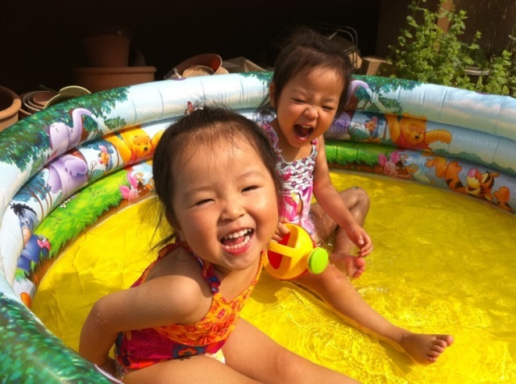
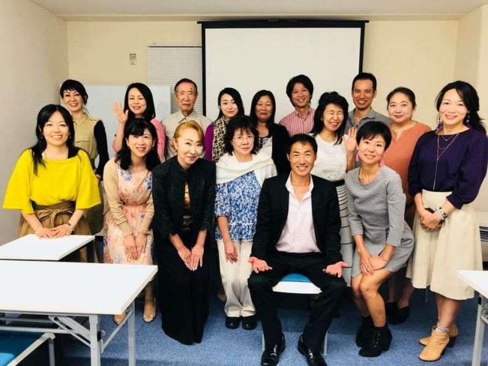

| ３日で億超え！女神のQuality of Lifeアンチエイジングリーディング : 前世から続く負の思考・価値観を書きかえる | |
| 黒田チコ | |
| (2018) | |
『３日で億越え！女神のQualityOfLifeアンチエイジングリーディング
～前世から続く負の思考・価値観をかきかえる～』をご購入いただきまして、誠にありがとうございます。
はじめまして。成功脳育！女神の食育CHICOアンチエイジングリーディングをお届けしているCHICOこと黒田チコです。
実は私は双子女児の母親でシングルマザーなのですが、離婚当時、やっと新居への引っ越しを終えた夜に思ったことがありました。
「こんなに安心した気持ちで食事をするのはいつぶりだろう。こうやって心から笑える食卓を囲めるのは本当に幸せ」
幼い双子たちは３人で暮らす意味の『離婚』という大人の事情もわからず、ただただ母親である私をみつめて笑いあい、まだ上手につかえるとはいえないお箸をつかって食事をしている様子でした。
「必ずこの３人の暮らしを成功させよう」
久しぶりに笑顔がこぼれる食卓に、そう心に決めた夜でした。
しかし現実としては、６歳の幼い子どもたちのいる生活のため両親や友達に助けてもらいながら契約社員として長い時間を拘束され働く生活です。
仕事が終わり帰宅すると夜の８時半か遅い日は９時半となり、子どもたちと夕食を一緒に食べられるのは休みの日だけ。物販の仕事だったために土日祝などの休日は働かねばならず当然、一緒には過ごせません。
また、社会人としての『シングルマザー』は信用を得ることが難しく区役所やハローワーク、面接会場など公共の場所では肩身の狭い思いをすることも多く『子どもとの時間優先の生活』に変えたくても叶わず、少しずつその暮らしの現実を知り重苦しいものになっていったのです。
離婚したことは双子を守るためには必要だったのです。それはきっと、元夫にとっても私にとって必要といえたことでした。
そして、これらのことが 『生きにくい人生』 のはじまりになりました。
そんな中、離婚前に祖母や母の愛を双子たちやその子どもたちへと遺したいとつくった絵本の存在が『絵本の読み聞かせと一行感想文』という形になり、４年間のボランティアを運営することになります。
その経験から、お母さんたちはいつも仕事や家事育児に忙しく、その子どもたちは愛されているのにもかかわらず寂しさを抱えたまま生きていることが多いことに胸が熱くなりました。
そして、双子だけではなく世の中のお母さんやその子どもたちに対しても、愛を形にしお届けしていこうと決めボランティア活動をしながら『アンチエイジングCooking』というお料理を世の女性たちへとお伝えてしています。
『アンチエイジング』に特化した日本の伝統文化の一つ『糀』の特徴をいかした『簡単時短プロ並みごはん』をつくり『健康』や『美しい細胞』になるための日本人にあうお料理教室を主宰しているのですが、友人からのリクエストで『アンチエイジングダイエット』を指導したことが『潜在意識活用』との具体的な出会いとなっていきます。
潜在意識活用との出会いを通して『負の思考や価値観』を手放せたことは、現世を『生きにくい』と感じながら暮らしていたわたしにとって、『本当に望んでいた幸せ＝クオリティオブライフ』をもたらすこととなり、とても大きな 人生のリスタートを きれたのでした。
そして、その素晴らしい経験をもって、ぜひ、人生の生きにくさを感じている方々に幸せになってもらいたいと考え潜在意識を活用した講座をしています。
CHICOアンチエイジングCookingスタジオの講座
成功脳育部
『成功脳育！CHICOアンチエイジングリーディング（潜在意識活用の体験会）』
『女神のQOLコンサル・アンチエイジングリーディング』
『女神のアンチエイジングリーディング養成講座』
裏メニュー（ご紹介のある方のみ）
『成功脳育！CHICOアンチエイジングリーディング人生プランナー』
●ご購入特典！
３日で億越え！女神のQualityOfLifeアンチエイジングリーディング
～前世から続く負の思考・価値観を書きかえる～』Amazonkindle電子書籍の発売記念として、 LINE＠へのご登録とスタンプ送信でご購入特典をプレゼント！
あなたの潜在意識活用のためのヒント満載LINE＠！
読者さま限定の「あなたの抱えている問題を紐解くためのチェックシート
をプレゼントさせていただきます。
女神の食育
『CHICOカフェレッスン（調理・盛り付け・買物・食べ方の体験レッスン）』
『アンチエイジングCookingアドバイザー認定講座』
『アンチエイジングダイエット指導』
おかげさまで、
Amazon kindle ３部門ベストセラー１位獲得！
ご購入いただくと ご購入特典 として
アンチエイジングCookingの貴重なレシピ３つ をダウンロードできます。
とても穏やかで誰にでも優しかったはずの夫との離婚経験で私のなかにも芽生えてしまった『負の思考や価値観』をどうにか好転させたいという想いに駆られ、心理学の本などを読み漁っていたのですが、どんなにそれを実践してみようとしても知識だけではどうにも身につかない状況が４年ほど続いていました。
２０１７年秋ごろ料理教室の仕事と学びのために働いていた薬局の仕事、２週間ごとに出されるコンサルの宿題に追われた生活に半年以上が経ち、すっかり疲れきっていました。
今から思うと疲労困憊という言葉がぴったりだったのですが利き手側の肩の違和感を治療の時間もほとんどなかったために放置していた結果、すっかり壊してしまい右手から腕、肩、首までが動かなくなってしまいます。
「仕事量を抑えて右手を使うことを減らそう」
このころ、料理教室の仕事と薬局の仕事だけで３か月先のスケジュールまでがギッシリと埋まっていて本当は仕事量を抑えられる要素なんてまったくありませんでした。
正直なところ嬉しい悲鳴を通り越し、右肩のことがあるので料理教室の仕事も薬局の仕事も、もう責任感でしかない状態です。
首と肩は寝返りも打てないほど痛いので、週に１回、２か所のブロック注射をうちながら内服薬で痛みを抑える日々。ただスケジュールを無事にこなすだけの毎日を繰り返していました。
そんな日々を数か月も過ごしている中、これまでの人生の選択、生き方についていろいろと考えるようになったのです。しかし時間は進んでいきます。
そうこうしている間に、以前から気になっていた『潜在意識』というものについてある一つの考えがまとまり閃きました。
「脳科学や心理学などの医学的な見解、量子力学に哲学、宗教やスピリチャルという学問など、ありとあらゆる学問は潜在意識の学問なのではないのだろうか」
それまでに心理学の本をいくつか読んでいたこともあり、ふと浮かんだことでしたがそれが見事に本質をついていたのでした。
潜在意識については気になっていたので有名な先生が出しているような本を少し読んだことがありましたので心理学に近い印象をもっていましたが難しいと決めつけているところもありました。
そこから、どうにか簡単時短で『CHICOアンチエイジングCooking』と同じように潜在意識をつかいこなせないかと考えるようになっていったのです。
それには『知識』と『実践』、『日本人にあうこと』の３つが必要だけど、最初から知識を学んでいる時間はないと考えるようにもなりました。
すると、まるで引き寄せられるような出会いによって潜在意識のプロである恩師に出会うことができ学びだしたのです。
学びだして数か月が経ったある日、その仲間からいわれます。
「最近、チコちゃんのいうことがズバズバ当たっているから凄いよね、なんか潜在意識が冴えているんじゃないの」
この一言が私の中の潜在意識を更に活性させます。
恩師がハワイのある海の動画を投稿しているのを観ていて胸に熱い感情が沸いてきたのです。しかも波に呼ばれていると強く感じます。
すると「はやく来いよ」というメッセージが感覚で波から伝わってきたのです。
「何をしているんだ、待っているぞ」
どんどん強くなるメッセージは胸に突き刺さるように伝わってきて、驚くことにそのメッセージを送ってきている人の感情らしいものや熱さや温度まで感じるのです。
そして翌日の恩師の動画投稿ではハワイの朝日をみたのです。
「おかあさ～んーーえ、なんでっ？」
この出来事は本当に衝撃的で不思議な経験でした。
そして、その直後に学んだ量子力学のチューニングとレイキというヒーリング法では更に活性したのか、ほかの方々とは違うような現象がおきて周囲を驚かせました。
この時点で約２年の間、お世話になっている信頼のおけるスピリチャルの先生、前世では姉だった大阪のスピリチャル業界のため活動をしている友人の２人の存在を思い出します。
「そういう能力があると思うよ」
ずっといわれていたのですが、現世である３次元でシングルマザーとして必死に生きる身の私には到底、想像もできない話で気にはなるけど無関心と同じくらいの言葉でしたので、すっかり聞き流していたような言葉をハッとして思い出したのです。
急いで恩師に連絡すると、すぐにモニターをするようにいわれ、潜在意識を活用する仲間たちや友人知人、男性もあわせて２週間ほどで１５名ほどの方々にリーディング体験をしてもらったのです。
すると、画像として見えていたり感覚として伝わっていたメッセージが 言葉として浮かんできたり、活字として流れてきたり、写真状態の画像だったものが動くようになっていつしか映画やテレビのように見ている ことにも気がつきました。
どんどん鮮明に見えるようになる動画はモニターをしてくださったみなさんの過去世を生々しく映し出すこともあり、そのたびにモニターの方と一緒になり、泣いたり笑ったりすることとなっていくのでした。
もともと、スピリチャルや脳科学などを操り仕事をしていて、そういう能力のある方々のご意見やご感想は潜在意識を活用しだして間もない私にはとても貴重なもので別世界のお話でもありました。
また、リーディング体験のご感想やご意見を伺うと想像を絶するもので、自分が一体、何をやっているのか、何ができるようになったのかというような、根本的なことさえとてつもない話ばかりを伺い、リーディングをすることで見えたり感じたりすることが面白くもありました。
CHICOアンチエイジングリーディングは潜在意識を扱う医学、生物学、心理学、哲学、宗教、スピリチャル関係など、さまざまな学問の中で活動をしているわけではなく、協会や宗教などの世界観など何の縛りもありません。
そんな単純で誰でもがもっている９７％の潜在意識と、生物や物質などがもつ中性子などとつながっているだけなので、 亡くなった方であろうが生きている方であろうが、ペットであろうが更にいえば体内の骨であろうが細胞一つ一つであろうが、パソコンやコップ、お財布やお金であっても関係なく、意識を向けるだけで自然につながることができるのです。
そこには、離婚当初、祖母や母の愛を双子たちやその子どもたちへと遺したくて『愛を形に遺したい』という想いと、その気持ちから生まれた世のお母さんたちとその子どもたちを『救いたい』『親子の愛を循環させ生きやすい世の中にしたい』そういう想いがあります。
潜在意識を活用する仲間たちや友人知人からは「愛は最高のパワーだから、その純粋なチコちゃんの愛が短期間であそこまでのリーディングができるようになったのだろう」といってもらえ、更に「モニターすること３日で億以上を稼げる潜在意識活用の能力のあるチコちゃん」といわれるようになったのでした。
このころの現実の私はというと、突然、長時間のあいだリーディングをして潜在意識を使うので不慣れなため脳が何日も熱くのぼせたようになり、そこに感情も伴うためにとても疲れて正直なところ戸惑っていました。
しかし日々時間は流れていて休むこともできません。
お料理の仕事をこなしながらも、リーディングをして、ぼうっとした脳を冷ますように休みをとりいれながら過ごしているといった状態でした。
ですがそのあと、モニターしてくださったみなさんに、ある 共通すること をみつけることになっていきます。
誰の過去世をみても『前世』といわれる過去世は一つではなくたくさんあり、今世へ影響を与えていることがリーディングで出てきます。
そして、どの時代にどのように生きたのかは誰でもバラバラの内容の過去世ですが、現世での問題と似ている要素があって、だいたいは繰り返しているようなのです。
虚弱体質で早死にが多いという私の過去世での特徴は、どの時代、どの国でも同じような人生をたどっています。
そして、現世で生きる黒田チコにもその傾向はあり、子ども時代はとても虚弱体質で小学校２年生くらいにならないと小学校へまともに通うことがなかったことと重なります。
仕事で影響している過去世では、食と医療の間のようなところで仕事をして生きている人物も何人かいます。これは現代の仕事のひとつである『女神の食育CHICOアンチエイジングCooking』につながります。
また、本質的なところではハワイでの過去世がとても大きく影響をしているようで、お金や人、世の中、異性に対して傷ついたり悲しんだことが現世での負の価値観の改善のための課題にも重なりました。
それらのことから、 リーディングにより過去世を知ることは過去の出来事のなかの辛かったことや悲しかったことと直面するため辛いこともありますが、一生懸命に生きていた 過去世の魂の記憶 を知ることなのだと思うようになりました 。
そして、過去を一生懸命に生きた人生を受け入れて尊重し癒すことができれば一番だと考えるようになっていきました。
しかし、現実的にそれはとても難しいことでもあります。なぜなら、その過去世は、もうすでに終わったことだからです。
そこで潜在意識の特徴である『時間・空間・距離という概念は存在しない』ということを生かして過去世で生まれた心の傷や痛みを今世から働きかけ、その魂を癒していくことをいろんな形で実験してみることにしたのです。
すると、過去世にあった心の傷、辛かった出来事は少しずつ解放され、心身ともに疲労困憊していた身体、首から右肩、腕、手首、手の痛みや不調は改善し、今世での問題からは解放された生活となり一変していったのでした。
今では今世の使命もわかり『女性や子どもたちを救い育てること』を実践することで、本当に望んでいた『幸せ』を満喫できるようにもなりました。
過去世時代の人々の階級社会経験や何かしらの縛り付けなどを考えると、３次元である今世の悩みは『小さな悩み』にしか過ぎないと思え、それまでとは嘘のように伸び伸びと軽やかに生きています。
そこでわかったことは、宗教などの学びはほとんどないので正しい表現かは別としますが、 人は『魂』というものに肉体をまとい生きている生き物といえるということなのです。
これらのことは現実的に潜在意識を活用したことでわかったことです。
つくり話やおとぎ話ではありません。
そして忘れてならないのは人間が持っている意識の中の９７％の潜在意識を利用したことで私や私の周りの方たちの、それぞれの問題が嘘のように改善していったことなのです。
潜在意識とは普段の生活で自覚されることがなく行動や考え方に影響を与える意識とされ、 心の奥深い層に潜んだ９７％の意識 とされています。
一方の顕在意識とは、 たった３％ を占めているといわれ 心中に明瞭に自覚されている意識 で通常はこちらを主に利用している現代人です。
数字的に見ても３％よりも９７％のほうが圧倒的に多いとわかりますので９７％をうまく使えるほうが楽に生きていけるのは一目瞭然です。
また、人は歴史の中で潜在意識を優先的につかい生きてきたのに言葉を生み出したことで顕在意識を優先する生活になったといわれているため、潜在意識を活用するほうが人として生きることの本質的なことでもあり楽に生きていけるのがわかります。
CHICOアンチエイジングリーディングは 疲弊した過去の生き方を解放し、楽に生きていける方法にシフトチェンジ、人生をリスタートしていける方法をつかったリーディングといえるのです。
「そうはいわれても、一歩を踏み出す勇気がなかなか持てなかったんです」
これはクライアントさん方からよく聞く言葉で、自分が望んでお申込みしているにもかかわらず、最初の第一歩を踏め出せずにいたという方々がいわれる言葉です。
では、なぜ一歩を踏み出すのに勇気が持てなかったのかに焦点をあててみます。
あなたはなぜ、一歩を踏み出すことができないのか潜在意識に聞いてみるのです。
●面倒くさそうで、なかなか足が動かない
●難しそうで足踏みする
●年齢的に無理
●家族に相談しないとわからない
実はこれ、自分が変わることに対しての恐怖があり、そこから逃げたいために出る言葉なのですね。そういう私にも以前はありました。
ですが、次のことに気がつくと改善したのですね。
何かをはじめるとき人間は『怖さ』を感じている生き物である。
「（年齢的にも）周りになにか嫌なことをいわれたり失敗してどんな風にみられるのかが不安で怖い。」
嫌なことをいう人は必ず確かにいますが、他人とは思考や価値観が大なり小なり違うのだから深く考えることもないのです。
失敗してどんな風にみられても、その周りの人たちはあなたが想うことの本質、本当のことを理解していない場合が多いため結局は知らないことのほうが多いのです。
だから『思考や価値観が違う、感性が合わないような人たち』とあなたが想うなら付き合わなくてもいいのです。
そもそも思考や価値観はまったく同じなんていうことはないですし、違うのが当たり前なのだから違っても気にしなくてもいいのです。そういう場合はお互いに興味を持っていませんから話も合いませんので一緒にいても心から楽しくはないのです。
大事なのは、あなたのためのあなたが使う時間で、あなた自身があなたを喜ばせることなのです。
だから、あなたの貴重な時間をそんな表向きだけの時間として過ごすのはもったいないのでやめてしまうのです。
また、なにかを新しく行動するときに年齢は関係ありません。
これは私自身が生き証人なのです。物心ついたときからリーディング能力があったかどうかは別問題としても、リーディング能力を使えるようになったのはつい最近４９歳の夏、数か月前のことだからです。
なぜ使えるようになったのかというと 、訓練というと大げさですが使えるように毎日繰り返したからで、ただ１日５分程度を数か月間のあいだ習慣にしていただけなのです。
しかも、『リーディングできるようになること』が目的ではなく『潜在意識を活用し楽に生きていくことが目的』だったのです。
リーディングができるようになったのは今では嬉しい誤算でもありますが、確実にいえることとして 『誰でも使うことができるのが潜在意識』 であるということです。
このことから、なにも不安に思う必要がないということがわかると思います。
人間の歴史からみるとよくわかりますが、言葉をもたなかったころの人間は本能的にしか敵を見分けることができなかったといわれています。
陰に隠れている動物など人間の敵になりうるものを見たり、そのものが出す音を聞いたり、臭いをかいだり、気配を感じ取ることで命を守っていたので、わかりやすくいうと五感を活用していたということです。
これは意図して意識するものではない潜在意識を優先にしていたということになります。
新しいことをはじめるときの不安や恐怖は年齢にも性別にも関係のない現象です。
このようなことを『脳』という方向からみて一言でいうと『ホメオタシス（恒常性）』という言葉で表すことができます。
いわゆる生体が外的・内的環境の絶えざる変化の中におかれながら，形態的・生理的状態を一定に保とうとする性質。
（ 株式会社平凡社百科事典マイペディアより ）
つまり、何か新しいことをしようとしたとき、人は変わることに対して恐怖や不安を抱いてしまい、勇気が持てないということです。
ね、そう思うと今まで不安や怖がっていたことに対して、実は自分のせいでも誰のせいでもない、人間の性質だったから当たり前のことだと思えるようになりませんか。
あなたは勇気が持てないなんて、あなた自身を過小評価しなくてよかったんですよ！
自己肯定感をしっかり持ち自己受容をあげることは、とても大切です。
なにかを手にいれようとするとき、それが自分にととって大きな目標であるなら何度も立ち上がる必要性があります。
諦めないで行動することだけが成功に導いてくれるからなのです。もちろん、誰も成功へと連れて行ってくれる人なんていません。
高いコンサル講座や起業塾へ入ったとしても、それは同じことがいえます。
ですが、大体の人はこういいます。
「高いコンサル（起業塾）に入ったからもう安心」
それって本当でしょうか。
『はじめに』でもお話しましたがSNS起業当初、思い切ってコンサルに申込みいろいろなことを教えてもらった期間がありました。
このころはネットの世界からすっかり遠退いた生活を１５年も送っていたせいで、右も左もわからないネット難民といえる状況で、本当に何一つわかっていない状況だったのです。
Facebookへの投稿の仕方、ブログ開設、ステップメールの準備、SNS起業ということなどがすべて一からの学びでした。
最初の３ヶ月は何からどう手をつけるのがいいのかもよく理解ができず、いわれるままに動く日々で、必死の毎日。余裕もなくて仲間との交流もあまりできていませんでした。そんなとき家族の問題が浮上してコンサルを続けるかどうかという選択を迫られます。
このとき、コンサルの先生がいってくれた言葉があります。
「チコさんの仕事は絶対にいいものになる」
この言葉が支えとなり私は再度、立ち上がったのです。
その選択のおかげでコンサルの先生が特別に延長を提案してくれたこともあり、卒業するころには依頼前の願望をすべて手にいれることができたのと基礎的なことを教われたので、今でも先生にはとても感謝しています。
このころの私は睡眠時間を削って時間があれば一生懸命にコンサルの課題をやっていったのです。料理教室以外の仕事もして、がんばってがんばっていました。
その期間には食の学びもあり３つの資格もとりました。コンサルが終わったころには潤沢な経済力と時間が手に入るつもりで頑張ったのです。
ですが、終わったとき調理をするには利き腕である右手、右腕、右肩は酷使しすぎていたのでした。
一生懸命にがんばるほどに『本質的に望む幸せ』からは遠退いてしまっていたのです。
子どもたちとの生活を守りたいがために一生懸命にがんばって、寝る時間を惜しんでまで学びながら、コンサルの課題をこなし働く生活。身体は限界まで酷使されていたのです。
このとき、利き腕である右腕がほぼ動かない状態です。つまり、仕事はおろか、日常生活もままならない状況にたたされていたのでした。
「こんなはずじゃなかった。何が間違いだったの」
そう考える日々が待っていました。
そして治療をしても一向によくならない首と右肩に、もう一生よくならないのかと半分諦めるようにもなっていきます。
自分の人生を歩くのは、どんなときも自分でしかありません。
やらなければならないことだけにフォーカスした生き方は、ときとして大きな誤算を招きます。
アンチエイジングCookingやアンチエイジングダイエットの生徒さまのなかには大病をされたのち、お食事を見直すために学びに来られる方も多くいらっしゃいます。
「これまでの人生、家族のためだけに生きてきた」
「これまで一心不乱に働き続けてきてしまった」
「自分の幸せってなんだったのだろう」
大病をされたとき、はじめて自分の人生を振り返るのです。そういう私もその一人でした。
このような方々は一部の方というわけではなく、本当は大なり小なりあってとても多い具体例だと思います。
ではどうすればそうならなくて済むのかというと、それは顕在意識だけに頼らない生き方をすることに限るのです。
日本人はまじめな性質で特にがんばりすぎてしまい周りや自分を後回しにして、一生懸命に仕事に取り組む方が多く、生活習慣や食習慣が乱れてしまう方が多いので要注意といえる民族となります。
このような場合、近くにいる人が注意や心配をしてくれていたなら、少しは違ったのかもしれません。どんな風に生きて、どんな人と喜びや幸せを分かち合うのかはとても重要です。
昭和の初期の大家族ならともかく、核家族化が進み３人家族や４人家族が日本社会としての家族の人数、単位といえる状況のなか、個食は進み家族はバラバラの食生活。一日にあった出来事さえ共有しない笑顔の減った家庭。そういう状況下にいる人も多いのです。
このように現代の日本人は、職場と家の往復で有意義な時間を持つことが少なくなっています。そればかりか、日々のちょっとした喜びや幸せを感じる時間すらほとんどないという個人が増えているのが現状です。
それらはそのまま環境ともいえるため、ささやかな日常にある幸せや喜びをもつこと、愛をもってかかわることが相互にできるかどうかを再認識、重視することも重要なのです。
３％しかない顕在意識をフル活用した生活が長く続くとストレスがたまり、がんばってもがんばっても、よくはならずにへとへとになるだけ。
それでも心や身体の声を無視し続けると身体の一部は故障を起こしてしまうのです。それが私の場合は首と右肩だったというわけです。
そして、顕在意識に頼りすぎてしまうと『がんばるほどに遠退いていく望む成功』ということにも気をつけて欲しいのです。
簡単にいうと、なにごともがんばらなくていいのです。そう『がんばらずに成功すること』を考えていくのです。
がんばらずに成功することとは、さぼってダラダラ生きろというわけではありません。
つまり必要ではないことをしない。
無理をしてがんばって、心に言い訳をして引き受けないことなのです。人間関係や損得などを優先してやらなくていいことまでやらないということです。
がんばらずに成功するなら、その方がはるかに楽しく目標までの道のりを歩いて行けると思いませんか。
３日で億越え！女神のQualityOfLifeアンチエイジングリーディングの『がんばらずに成功する』方法はなにもやらないという意味ではなく、毎日５分のワークで必要なことを選別し、日本人にあう方法でまるでちょっとしたトレーニングのように潜在意識を活用することを習慣化していくことになっていきます。
どんなときも時間は待ってはくれません。早急に望む幸せを手にいれようとしたときには必要でないことはやらなくていいのです。時間は貴重ですからそれくらいでいいのではないかと思うのです。
そして、出る杭は打たれることが多いのも事実です。
今までの交友関係やつながりのある人脈のなかでは、あまりにも早い期間で成功を手にいれたあなたをみて「急に雰囲気が変わった」などといい、それまでの関係性が壊れたり崩れてしまう場合があります。
また他人はいろいろなことを無責任にいえる立場にあるものなので、あまり深くその問題を掘り下げないでおき打たれ強くいることであなたの軸はぶれずに済みます。
『あなたの本当に望む成功』はあなたがあなた自身を信じて必要以上に不安を抱くことなく、ぶれることなく手にいれられるのだといえます。
●顕在意識だけに頼らない
●人間の本質に従う
●日本人にあう方法で潜在意識をうまくつかう
●なんどもチャレンジをする
●自分自身を必要以上に追い込まない
●トライ＆エラーという姿勢をもつ
●打たれ強く深く掘り下げない
●他人より自分を信じる
●目的を見失わない
●成功したあとになにをするか決めておく
お料理だけが愛を形にすることではありません！
肩を痛めていたのに治療を後回しにし続けた結果、コンサル期間が終わるころには首から右肩、右腕、右手までの不調が痛みとなり出てしまいます。
仕事をやめることも選択肢の一つだとすると、薬局の仕事かお料理の仕事のどちらをやめるのかということを選ぶことになります。
薬局の仕事はお料理の仕事に生かしたかったからですし、やめるなら薬局しかありません。それに、１２月のスケジュールまでお料理教室の仕事は満席状態で私の変わりはいないのです。
経済的なことがあり直接生活にかかわるので簡単には決められません。そんな中でも毎日右肩や手が痛み、眠れない夜はやってきます。窮地に陥るとはこのことでしょうか。
まさに追いつめられる日々がやってきていたのでした。しかし、ここで私は考えることをやめます。
「失敗しないことはやり続けること」
これは４５年間、神戸の繁華街で飲食店を経営していた父が生前にいっていた言葉でした。父は戦後の神戸の中心部で飲食店を経営して一時は従業員の社宅をもっていたほど経営では成功した人でした。しかしバブル崩壊後の阪神淡路大震災で大打撃を負った店舗の経営をめぐり１０年という長い間、裁判をし、店舗の家主との長年の対立にも負けず経営しつづけていた経緯があります。商売人の娘として育てられた私の中にある知識であり知恵でもありました。
そうして薬局の仕事を辞めて体調と相談しながらお料理の仕事をしている中、生徒さんやクライアントさんの悩みをきいたりすると『やりたいことが明確になっていく』感覚が生まれていきました。
また、ダイエットで悩むクライアントさんの問題が食べ方や食材選びの問題だけではないということにも気づきます。このころから潜在意識を具体的にとりれたメソッドを徐々に考えていくのでした。
「諦めないことで開花する」
これは、その後のクライアントさんの成果や私の身に起きた経験上、今だからこそいえる言葉ですが、誰でもなりたい自分を思い描いて諦めないことで目的を叶えることができるのです。
それはとても簡単で 幸せになろうと決めるだけ、諦めずに突き進むことで開花する のでした。
まわりの誰のことも気にせず『あなただけの幸せ』を見つめることで『一本の光の矢が差す』そんなことが起きていくのです。そういう方を目の前でみてきましたので必ず道は開けるといえます。
それには、WHOも認めた５０００年以上もの歴史のある方法をとりいれた方法などをつかい、毎日の習慣として１日５分だけ次のことをするのです。
成功脳育！CHICOアンチエイジングリーディングで潜在意識活用で成功する方法
１日５分！早すぎる！簡単すぎる！誰でもできる！１０の法則
ファーストステップ
●自己受容をあげる
●過去にできた傷や痛みと向きあう
●不安をなくす
●豊穣の女神アバンダンディア・アバンスレイ認定資格伝授
●守り方
●顕在意識への働きかけ
●成功した姿をみつめる
セカンドステップ
●お金・幸せを呼ぶ方法
●潜在意識への働きかけ
●望む成功以上のものを手にいれた姿をみつめてみる
これらは根本的概念を覆す、集約された潜在意識活用法、時間がない方や勉強が苦手な方こそ有効です。そのどれもが、今でも私が実践していることで、今までのクライアントさんや養成講座の生徒さん方の成果が出ていることばかりです。
また、私の場合、職業柄もあり健康に気をくばるための食事を心がけていてオーガニック食材などの食べるものや飲むもの、ひいては生活自体にも気をつけているということがあります。同じように食べたり飲んだりするものに対して気を配られている方の場合、比較的早く潜在意識活用が生かされ、覚醒される場合が多いですので、人間は食べ物や飲み物からできていることを自覚し、世界中の人類という中での日本人として、私たちにあうこのメソッドがとても重要なのだと思っています。
●今まで足踏みしていた仕事の状況が一転、とんとん拍子によい知らせが舞い込み低迷していた事業が順調に経営できるようになった。（東京・Ｓさん・カウンセラー）
●地方での起業で店舗での仕事には限界を感じSNS起業に挑戦したが、なにからどうすればいいのかがわからず途方に暮れていた。毎日のワークをすることで潜在意識活用で脳育ができているのでそれらがすべて改善して新規のお客さまが遠方からも来るようになった。（三重・Мさん・スピリチャルヒーラー）
●何もできていないと思っていたが貸しオフィスで仕事したいと素直に国道に移すことができました。現在進行中ですがリーディングしていただいた内容、チコさんと話したことがそのまま現実になります。（東京・くにもと ゆきえさん・カウンセラー）
●チコさんのリーディングは諸々の改善の糸口を見つけてくれます。過去世を知るっことでよい今と未来へのヒントがたくさんもらえました。リーディングは現状打破や潜在意識の書き換えに役立つし明るい未来のために必須だと思っています。（滋賀・葉月
陽さん・女子アナウンサー）
●WEBの知識がまるでないし、学びだした当初はわからないことが多くてなかなか１人では１歩をふみだせなかったのですが仕事に役立てていきたいのでリーディングと実践で教えられたことをすぐにやってみようとしています。潜在意識の素晴らしさはもともと知っているからすぐに改善しそうです。（東京・Ｈさん・セラピスト）
●リーディングでみてもらうと、海外であるものを販売するということをチコさんにいわれました。友人たちは海外とのご縁がありましたが私にはこの時点ではなかったためどうなるのかと思っていましたが、思いがけないところからお声がけいただき仕事となり販売となりました。ありがとうございます。（東京・Ｈさん・宗教法人）
●受講する前の長年の悩みと違和感がチコさんのリーディングを受けてとてもすがすがしくて、霧が晴れた感じです。本来の自分を確認できたから今後は、家族や周りの方を癒すことができれば嬉しいです。（大阪・Reikoさん・紅茶教室主宰）
● 前世リーディングでは自分でも意識していない領域からの影響が、こんなにも大きく関わっていると知ってびっくりです。今現在をより良く生きる為にも知ることが出来て良かったです。過去世に影響されている事、今世と切り離す。
そんなことあるかなと不思議に思う人もいると思いますが、すべてがつながっていて意識していない領域で記憶しているんだなって納得しました。
自分では、分からない魂の記憶なのでチコさんのリーディングをして知ることが出来て良かったです。心が明るく気持ちが軽くなりました！自分が信じる希望に向かって、軽やかに進めます。ありがとうございました。（大阪・奥 有希子さん・インテリアクレイスィーツⓇ主宰）
●不安が消え精神的に安定していられる
●小さな悩みで悩まなくなる
●囚われた想いや思考から解放される
●本当に望んでいることがわかる
●疲弊した生活が一変し充実感がある
●すべての人に感謝できるようになる
●自己肯定感が上がり自信が持てるようになる
●前向きに生きることができる
●表面的な幸せではなく真の幸せを得られる
●進まない経営状況から脱却できる。
●進む道が開けてくる
●素直に行動に移せる
●時間を有効につかえる
●明るく生きるためのマインドができる
●本当の自分に出会える
●毎日が楽しくなる
●ダメンズの恋人関係を卒業できる
●輝く美しい肌を手にいれられる
●老いに向かって諦めていた身体に活力を取り戻せる
●適正体重でダイエット・適正体温になることができる
●一生もののクオリティオブライフを手に入れられる
●家族にも継承できる潜在意識活用法を学べる
これらの望む幸せをたくさんの方々が手にいれられています。
「クオリティオブライフと聞いて、どんなイメージをお持ちですか？」
和訳すると『人生の質』または『生活の質』。広義には、恵まれた環境で仕事や生活を楽しむ豊かな人生をいいます。
「あなたは今、どんな環境でお仕事をしていますか」
常に誰かの役に立つことを考えている起業家たちのクオリティオブライフは『心から楽しめ愛が溢れる豊かな人生』そうあることが発信者として必要だと考えます。
具体的にはその根底にある『愛』を世の中に循環させることで求めている幸せがようやく完結していくといえるのです。
「なぜそんなことがわかるの」
それはね、よい起業家は誰かの役に立つことをずっと考えてきたのを知っているからなのです。だからこそ、起業までしてボランティアのように働いてきたのではないですか？
ですが『幸せ』といっても人によってさまざまでもあります。
ある人は恋人と過ごせることといい、ある人は家族の健康といいます。
またある人はお金に困らないことといい、ある人は好きなものに囲まれて暮らすことといいます。
生徒さんやクライアントさんのことを考えてみると、健康でいつまでも若々しい容姿のまま同じようなご家族やお友人などに囲まれて過ごせることが幸せの基本となっていて、そのうえで自分らしく充実した人生を送りたいという方が多いのではなかとお見受けしています。
「あなたにとっての『幸せ』ってなんですか」
しかし案外、人は自分のことがわからない生き物です。そんな風に質問をしても、すぐには出てこないのです。
ましてや「あなたの本当の願いはなんですか」なんて聞いても、曖昧さがぬぐえなくて、ご自身はさっぱりわからないもののようです。
そこで心理学などになるチェックシートをするのも一つの手ではありますが、この方法では大量に時間がかかっていまいます。
そこで本質的なものが求めている『最上級の幸せ』を『実感』するために、潜在意識を活用すると楽にわかってくるのです。
それは、かつてコンサルを受けていて無理をしながら生活をしていたため『わたしが本当に望んでいた本質的な幸せ』を知らずに働きつづけたことで身体に不調がでた経緯がある実体験があるからいえるのです。
意識のなかのたった３％である顕在意識中心で生きてきたため本質的なことに気づかなかったのです。何度もいいますが人は無理をすると身体に体調不良として何らかの症状が出ます。大病として不調を訴える人も多いのが現実です。
それは、がんばるほどにうまくいかなかった現実でした。
CHICOアンチエイジングリーディングでは潜在意識を知識から学ぶのではなく、成功脳育１日５分のワークを通して実践し身につける方法をとっています。
難しく頭で考えるというのではなく 身体をつかって腑に落とすワークは５分もあればできる からおすすめで『最上級の幸せ』を『実感』するためにとりいれ『幸せ体験や成功体験』をしていくことなのです。
その方法、瞑想について少しご紹介します。
今、瞑想は世界的にみて一部のセレブリティの間で流行っています。
最近では有名になりましたがFacebookやグーグルといった世界的大企業は全従業員たちへその時間を設けることを義務づけています。
かつては、従業員たちの健康のために薬やサプリメントを支給していたともいわれている会社ですが、その結果、健康を害したり心を病んだりする人が増えたことがきっかけで瞑想へとシフトチェンジしたということです。
潜在意識の恩師はFacebookへ見学に行ったとき、同じ形のビルが２棟あり何重ものセキュリティチェックを通り、あるひとつのビルへ入ったそうです。
その中はまるでファッション街のようで飲食店や雑貨店が立ち並んで社員は無料で利用できるらしいのです。（素晴らしい会社！）
そこで、何軒かおきにある扉があり、なにをする部屋なのか訪ねたそうです。すると、瞑想の部屋だと答えが返ってきたとのことでした。
今、世界中の最先端のセレブリティが旅行をする場合、そのホテルには『瞑想ができる部屋』があるのかどうかが基準にされてきているようです。
それくらい、潜在意識を活用するほうが楽に生きていけるということが世の中では知られてきています。
セレブリティが注目するのは、なにも流行というだけではありません。最初に記述したように、脳科学や心理学などの医学的な見解、量子力学に哲学、宗教やスピリチャルという学問を通して、科学的に、あるいは伝統文化という形で認められているからなのです。
もちろん、それらの学問をひとつひとつ丁寧に学んで身につけることは素晴らしいですが、いい大人になった４０代、５０代以降の人たちにとっては、手っ取り早く身につけてしまうことがいいと考えています。
脳科学という見解からすると脳の発達度合いの遅い早いは別として、病気にならないなら死ぬまで学びを続けられる存在です。
また「脳が安心状態にないと、人は学べない」ということもあります。一方で、ある種のストレスがある状態だとパフォーマンスが上がるのもわかっています。
３次元で生きるあなたは顕在意識にあたる３％しか意識をほぼ使っていません。
意識全体は１００％あるのに、たったの３％ですから潜在意識をもっと有効につかって活用するのです。
すると３％で生きていたときの生きにくい問題点が徐々にわかってきますので、その問題点を解決できるように成功脳育１日５分のワークをがんばらない程度にしていくのです。
それらは一見、ばかばかしく思えることかもしれませんがこのワークのなかには人間の本質、潜在意識に働きかける方法が詰まっているので、必ず誰でも何かしらの変化が起こってきます。
あなたが思い描くあなただけのクオリティオブライフは充実している生活ともいえます。それには切っても切れないのが『愛の存在』です。
『愛』で満たしたクオリティオブライフは更なる『愛の循環』を呼び『愛で接すると愛で返ってくる』という、願ってもない循環が起きていきます。
「あなたは誰かを愛していますか。そして、愛されていることを認識していますか」
人は成長とともに『愛されていたからこの世に生まれた』ということを忘れていきます。
それは脳の仕組みや大抵は、親が子どもを自立した人間になるように育てていくからですが、その環境によっては受け取る側の子どもは素直に受け止められないこともあり ます。それは子どもを育てている親にも同じようなことがいえ、環境が親にとって辛い場合は子どもを素直に愛することが難しくなったりもします。
ですが、どんなときも『愛しているし愛されている』んです。
それは、あなた自身が望む形ではない、またはなかったのかもしれません。ですが確かに愛されたから生まれて育ち、今という時間を生きている。
親だって人間です。そう、あなたと同じ、間違いだらけの人間で１００点満点の神様にはなれないのです。
だから、その辺のおじさんもおばさんも、学校の先生も友達も間違いだらけの人間、間違いを起こす人間なのです。何かが起こって嫌な想いをしたからといって、そこに執着せずにいて欲しいのです。
魂という概念でみると、ちょっとした一瞬の出来事ですから、負の感情に執着せず『愛された事実、真実』に焦点を合わせることです。
あなたが『愛されたこと』・『愛されていること』これは間違いのない事実だということを忘れないでいてください。
そして、それらを確認できる１日５分の成功脳育ワークで、それぞれの『負の感情』や『負の出来事』に縛られていた過去から一転できるのです。
たったそれだけ。それだけで『過去の負』を解放できる方法を手にいれられるとしたらどうですか。
それにはまず、あなたのことをあなたが知ることではじめて『あなただけのクオリティオブライフ』実現へ向かうといえるのです。
ぜひ、成功脳育！CHICOアンチエイジングリーディング潜在意識活用で成功する方法を学び、あなた自身であなたを発見、本当のあなたを知ってください。
そんなことする時間がもったいない！まどろっこしいから待てないというのなら、今のところは裏メニュー（ご紹介のある方のみ）になっているのですが『成功脳育！CHICOアンチエイジングリーディング人生プランナー』をすることが手っ取り早いのかもしれません。
『愛が循環するあなただけのクオリティオブライフ』を手にいれたあなたは、きっと至福の時間を満面の笑みで過ごすことになります。
他の誰に理解してもらわなくたっていいのです。あなたの人生だからあなたが充足し、あなたしか生きることができない人生を喜ばせてあげるのです。
「あなたはそのとき、なにをしていますか」
「どんなこと感じているのですか」
「あなたの幸せのなかには、なにが見えていますか」
実は、それには喜びというより『悦び』が必要です。
あなたが幸せを感じているとき、あなたは喜んでいます。それは、『魂の悦び』である必要があります。
それこそが潜在意識をつかい瞑想でみた『成功した姿をみつめる体験』であり成功体験なのです。成功体験を瞑想で知ることは希望であり夢、目標となり日々の支えにもなります。
そして、成功脳育１日５分の潜在意識活用をする日々を送っているだけでマイナスの感情や心配、恐れなどは薄らいでいき自己受容も上がってきます。
また、そうすることで誰かとか、なにかに依存することもなくなってくるのです。
結婚していてもしていなくてもそれは関係ありません。自立した人間、女性でいられるので誰にも依存しないでいいのです。
だからこそ、それほど好きでもない人とつきあう必要もなくなり腐れ縁などという関係の恋人や友人たちとも付き合わなくて済むようになり、心身ともに自分自身を大切にしていくことができるのです。
CHIC O アンチエイジングリーディングをした人は、『魂のご縁がある人』というのがわかるので特に不必要な方とのご縁は薄らいでいくようです。
それは単純に、今世での使命や本当に望むものが明確になることで必要なご縁が際立つようになるからともいえます。
魂に肉体をまとい生きている今世の限られた時間を、つまらない感情や思考に囚われることなく生きて満足させようと考えたとき、自然にそういう流れになるのですね。
繰り返しますが時間は有限なのです。そう考えると別れの決断も必要になるのです。
そして、それは正真正銘、あなたが望んで選んだ道だともいえます。
「別れを決断することに寂しさを覚えますか」
「その寂しさの感情はどこからきていますか」
あなたの至福を考えたときに別れを決断したのなら、当たり前ですがそれは、あなたにはもう必要がないのです。必要以上の感情移入などはあなたの至福への道のりへの邪魔にもなり得ますのでご注意を。
そして、あなたの人生はあなたが生きるための人生です。しっかりとぶれない軸をお持ちください。
本当にあなたに必要な人なら別れは訪れません。
また、あなたは『○○をしてきた誰である』などという肩書きや経歴などの過去とは関係がなくなります。
そう例えるなら毎日がお誕生日！『毎日が真新しい自分』です。
過去はむしろどうでもよくなってくるくらいになれるので、なにもかもが身軽になり軽やかに生きていけるようになっていくのです。
そして、必要なものだけに囲まれた生活、これ以上にない『至福』それこそが本当に望んでいた『真の悦び』だと気づくことになります。
今ある幸せ『至福の時間』に充実感が増し愛に満たされている日々は、あなただけではなく、あなたの仕事、趣味やご家族、恋人など、あなたを取り囲むものすべてを輝かせていきます。
こんな風にイメージして毎日がお誕生日！
「毎日が幸せ」
そうお話をされる生徒さんがいました。
口癖のようにお話されていたので印象に残っているのですが、当時は恵まれた環境だからそのようにお話しするのだろうなあと思っていました。
なぜなら、だんな様はイケメンで理想の男性、経済的にも裕福、お子さんや友人にも恵まれていると、と本人がいっていたからです。
そして、興味深いことを続けられました。
「私は容姿も恵まれてはいないし頭もよくはない。だからこそ、自分から動くんです。だって待ってたってなにも訪れてはくれないでしょ」
現代の日本人でこのようにいえる方ってどれくらいいるのか。そのとき、そう思ったのをよく覚えています。
ここで、世界幸福度ランキングというものがあるのでみてください。
世界幸福度ランキング２０１８年
第１位フィンランド
第２位ノルウェー
第３位デンマーク
......
第１０位オーストラリア
......
第１８位アメリカ合衆国
......
第５４位日本
ちなみに前年２０１７年の第１位はノルウェーで２位はフィンランドと、どちらの国も根強く幸福度が高いですね。
では、ここで質問です。
「あなたは自分の人生に点数をつけるとしたら１００点満点でいくつの点数をつけるでしょうか。」
日本人にこの質問をすると、いい人で２０点～３０点くらいというそうです。クライアントさんたちも大体が５０点以下でやはり低めです。
ですが、この質問をアメリカ人にしたとすると、なんと１２０点や２００点という人がいて、９０～１００点満点がほとんどです。
同じ人間なのに信じられないほど大差があるのです。同じ質問にもかかわらず、なぜこのような違いがあるのか不思議だと思いませんか。
実はこれは脳に違いがあることが大きくかかわっています。私たち日本人と西洋人の脳が違うのです。要するに人種によって脳には違いがあるのです。
簡単にお話をすると、すでに生まれた時点で脳のさまざまな機能が違うのでとらえ方などが変わってくるということがあるようです。
そして、育まれてきた文化的な要素、つかわれてきた言語にも関係があるといわれています。それらをあわせ左脳を酷使する日本人と右脳を酷使しやすい外国人という違いがあるのです。
これはつまり世界中の人が、いっせいに一つのことをしたとしても必ず差ができるというわけです。
海外からきた最先端科学をベースにした潜在意識メソッドをとりいれても、なかなか日本人は馴染めないという問題が起こるのは、この違いがあるからといえます。
そうなると、どうすればいいのかが自ずとわかります。そうです、日本人にあった潜在意識のつかい方をするのです。
それは、日本人という民族性を考えてつくられた『誰もがとりいれることができる方法』なのです。
もともと１００点満点中５０点以下という『自己受容が低い私たち日本人』は、とにかく自己受容を引き上げることが必要です。
多くの日本人女性がそうするように「キレイですよね」そういわれて「そんなことはないですよ」と謙遜をして返事をしていたら駄目だったのです。しかし、こう答えるのが謙虚な日本人の美徳であり民族性だったというわけです。
実際には成功脳育１日５分のワークで潜在意識をつかい自己受容を引き上げるのですが、とても簡単な方法で引き上げていきます。あまりに簡単すぎてバカにしてしまうかもしれません。ですが実は日本人にはとても重要なのです。
CHIC O アンチエイジングリーディングでは日本人の低い自己受容をあげることからはじめます。そして、今のあなたが 光り輝く日々をおくること を目指していきます。
それはまるで、きらきらと輝いている日々が眩しかった青春時代のような時間をとり戻すように、この先の人生でもずっと愛に満ち溢れ生きていくこと、身も心も充実するということを叶えていく最初の第一歩です。
そうすることで笑顔が溢れる日々が待っています。未来のあなたはどんな姿なのかを成功体験、成功瞑想で確認し、ばかばかしいと思いながらも続けてみてください。そうすることが成功への第一歩なのです。
そして未来の中に成功しているあなたをみつけたとき、あなたは思わず笑顔になっています。
そのとき、そこに存在するだけで優しいあなたの笑顔がこぼれる感覚が周りにも伝わり、あなたがいるだけでその場は華やぐ状態ができているのです。
これ は CHIC O アンチエイジングリーディングをすると誰でもができることで、しかも早い人では１ヶ月ほど、平均でも数か月という短期間の間に毎日がそんな風に送れるようになるのですから、やらない手はないと思うのです。
こうして暮らしていると、誰もが笑顔になるので周りには幸せなパワーが満ち溢れていきます。そして、知らず知らずのうちにパワーを発揮できるようになり愛に包まれるのです。するとどこからともなく愛のお返しがあります。そしてまた、愛に包まれる。そんな毎日が続いていきます。
一日が終わると、愛おしい人との団欒があります。そこは、あたたかな居場所であり、あなたの求めている場所でもあります。
そうして、心から愛おしい存在に囲まれる人生は幸せな記憶として永遠に刻まれその記憶を潜在意識は覚えていくのです。
リーディングをしていて過去世をみるとき、幸せな感情をもった過去世の人に出会うと嬉しくなります。
そういう場合は意識もしていないのに、口角は上がり笑顔になってしまいます。そして、ずっと、みていたい愛おしいものが見えていると、ずっと目で追ってしまう感覚にもなります。
これは魂の悦びで、私はその方の潜在意識と同調しています。
今世で縁のある人は過去世のなかにも出てくることが多いので過去世の中で出会えたとき、また、本当に望んでいるものや人を見つけたときの悦びは、とても嬉しくて笑っていしまったりにやけてしまっているのがわかり、面白いのです。
我家の場合では、長女はハワイの過去世でも私の子どもとして生まれたようで光輝いていました。それを知ったときは感動と感激で勝手に涙があふれてきて涙が止まりませんでした。
「また、私のもとへ生まれてきてくれてありがとう」
また、二女の場合は古い時代の日本で、呉服屋のお嬢さんとお世話係のお手伝いさんという関係でした。過去世では両親が忙しくて身なりも学びも充分すぎるほどの環境にいましたが、とても寂しい子どもでした。そして、過去世の二女は、一日のほとんどを私と過ごしていました。
今世である３次元で二女は思春期に入り心と体のちぐはぐな感じを持て余している状態でした。そこで、リーディングで聞いてみたのです。
CHICO「どうしてそんな風に落ち着かないの」
二女「だってママが大好きなのに忙しくて」
二女の潜在意識がそう答えました。
そして、今世で生きる二女の現実は『母親が忙しいことを嫌うこと』の原因がここにあるということがわかりました。
ですが、このリーディングをしたことがきっかけとなり二女に過去世のことを含めて話してあげると「ママを選んで生まれてきたのがよくわかって嬉しかった」といい、落ち着きを取り戻したのでした。
よく宗教やスピリチャルの世界でいわれるのは『今世で生きるためのストーリーを自分で描き用意してから生まれてきている』ということですが、実際のところは私にもわかりません。
ですが、潜在意識を活用してリーディングをしたときに二女の潜在意識がそう応えてくれたのは事実です。
このようにリーディングができるようになったことで、少し前なら考えもしなかった今世での問題解決が素早くできたことは嬉しい出来ごとのひとつでした。
潜在意識は時空を超え過去世をみることで、３次元で生きる私たちの問題の根本原因がなんであるかを私たちに伝えてくれる一面を持っています。
そうして、以前のようにママ大好きな二女は双子ということもあり、長女のすきを狙ってはそっと自然な感じでママの隣の席を確保しています。
少し前の二女が感情をコントロールできなかったときのことを思うと、本当に嘘のような姿ですが、３人で話していると満面の笑みで笑いを誘うようにおどけて話す姿に癒されています。
潜在意識を生活の中で活用できることは、子どもたちとの出会いやご縁、周りの人とのことを含めたすべてが、偶然の出会いではなく必然で愛を軸にした学びのためだったことを知れるので、とてもありがたく感じるものの一つといえ、自然に笑顔が満ちていくのです。

２０１０年ごろの双子たち
CHICOアンチエイジングリーディングを通してわかることは、人は潜在意識が悦ぶことで本質的で充実した幸せな日々を送れるということです。
顕在意識ばかりをつかった生活をする現代の日本人にとって、潜在意識というと難しくとらえがちですが、人類としての先人はうまく活用していた歴史があるので安心して活用してほしいと思います。
そうしてはじめて、顕在意識も潜在意識もどちらもが悦ぶのです。
これこそがクオリティオブライフの充実といえ『本当に求めたもの』がみつかると、それを純粋に追い求めることで『３次元での成功』を呼び込み顕在意識だけでは成しえなかった『超越した成功体験』を引き寄せることにもなります。
それは仕事上のことであったりプライベートであったりとさまざまですが、明らかに以前とは違う流れを感じ、CHICOアンチエイジングリーディングを知るまでの自分が考えもしなかったことが目の前に現実として現れるのです。
今、今世を生きながらいくつもの過去世を知ることは、『人生というものは学びである』ということとともに『大いなる課題をもっていること』でもあるということにつながります。
あなたのなかになんらかの問題があったとします。そのたびに人は立ち止まり悩み、その問題を解決しようとします。
「この問題は、まあいいか」と、一旦、思うことになったとしても、何回も同じような状況が引き寄せられて起こり、また『この問題』に似たことが起こってしまい本質的なことの問題点の解決へと導かれるのです。
これがよくわかるのは顕在意識でがんばりすぎてしまった過去の私の例です。
幼いころから虚弱体質なのに２０代では仕事が終わると家業を手伝い夜まで働く状況。本格的に家業に入った途端、環境の変化なども含めて入退院を繰り返す日々、その後は結婚離婚を経て、シングルマザーという社会的ストレスをうける環境に自分自身を追い込む状況が重なっているのに、問題点には気づかず、起業後もダブルワークで心身ともに顕在意識はフル活動、とうとう利き腕をつかえなくなるという事態だったのです。
これらでわかるように私の場合は生きるための方法を伝えること『身体の不調を改善する生き方を人へ伝える』という『大いなる課題』でした。アンチエイジングＣｏｏｋｉｎｇをただ発信することではなかったのです。
根本的解決ができなければ何度も訪れる『大いなる課題と学び』です。
そして今ならわかるのですが『圧倒的な愛の存在』・『生きることの悦び』とともに『どんな環境に置かれていても潜在意識を活用していると求めるものが導かれる』事実があるということです。
あなたの人生に『大いなる課題と学び』が必要なら、この先の人生において何度でも訪れるのです。それが解決できたときにやっと『圧倒的な愛の存在』と『生きることの悦び』を知ることになり『愛が循環して人生が充実する』ということが起こってきます。
このことは顕在意識だけに依存した生活を送っていたら決してわからなかったことだといえます。
そして、顕在意識と潜在意識はどちらも必要不可欠で、人が失くしてしまったことをとり戻すような感覚、それは人類の歴史からみた生きるための知恵ともいえ、人間が原点に戻ることだともいえます。
魂の旅はどこまでも続いていく。潜在意識はこの先もずっと生き続けるのです。
人は置かれている環境に、つい不平不満をいいますが、それらに左右されずに真実を見極めることが人生を満喫する生き方のためには必要です。
人生の岐路に立ったときの選択の基準は、潜在意識を活用しているときに近いとされる、『感覚』を大切にすることでもあるということです。なぜなら感覚は潜在意識を認めること、そのものなのですから。
偉人をみると、いわゆる３重苦といわれるような方もいます。
ヘレンケラーは見えない、聞こえない、話せない子ども時代を送りますがサリヴァン先生の愛の力で見事に大成をします。
これはサリヴァン先生がヘレンケラーならできると信じて愛をもって育てたことにありますが、おそらくヘレンケラー本人がさまざまな不幸のなかで苦しんでいた中にみつけた光、希望、夢や目標が生まれたからなのではないかと思うのです。
もし、あなたのなかの無意識である潜在意識がヘレンケラーの子ども時代のように苦しんでしまう思考やネガティブに値するものであるとしたら、すぐに成功脳育１日５分のワークを実践して自己受容をあげ不安を取り除き成功しているご自身の姿をみていくのです。
そうすることで光をみつけ、希望や夢をもって生きていくことが早急に必要です。
なぜなら、そうするだけで必ずあなたの想う至福を叶えられるからです。
強運といわれる人、成功者たちは、無意識である潜在意識が占めるポジティブな思考は限りなく１００％に近い９０％以上といわれています。そして、一般人ではなんと１０～２０％しかないだろうといわれる現実です。
これらからわかる最も大切なことは、潜在意識をつかって本当に成功できる人、引き寄せを体感ができる人になるには成功させようとする『意志の力』が重要だということです。
意志とは成し遂げようとする『心の力』です。ご自身が意識することなく存在しているので、結果的に潜在意識といえるのです。
そして『いし』という言葉にも注目してください。
『意思』とは内面の想いを表していて『意志』は決意を表しています。
どちらの『いし』も心の中のことなので潜在意識とつながります。これらのことから成功するには強く２つの『いし』を持つことが必要なのです。
もちろん、１人で大成を成すことには限界があるのでサリヴァン先生のように支えてくれる『愛ある存在』も必要だと思います。これは両親や子ども、愛するパートナーの存在といえ、置かれている環境でもあるため、いろいろあったとしても『愛されている真実』をしっかり胸に抱え持っていればやがて成功できるというわけです。
このように、偉人といわれる人たちは潜在意識を上手く活用していたといえますが、ここでとても有名なマザーテレサの言葉をご紹介します。
思考に気をつけなさい、それはいつか言葉になるから。
言葉に気をつけなさい、それはいつか行動になるから。
行動に気をつけなさい、それはいつか習慣になるから。
習慣に気をつけなさい、それはいつか性格になるから。
性格に気をつけなさい、それはいつか運命になるから。
マザーテレサは、『すべては思考法から始まる』と知っていたのです。
おそらくマザー・テレサは、引き寄せの法則をよく理解していただろうといわれているのは、このためです。当時は引き寄せの法則という言葉は無かったかもしれませんが、それでも無意識に理解していたように思います。
他にも偉人や有名人の中には潜在意識をうまくつかい成功を収めた人たちは多くいます。
そこで脳の機能、記憶について考えてみます。
重要な機能をつかさどる場所は海馬で神経細胞の数は増殖して増えていくことがわかっています。ということはベテランといわれるキャリア世代が仕事などで大成功を成し遂げるのも納得の結果だといえます。
脳科学の研究では海馬がθ波のリズムにのると記憶力が増すことがわかっています。
θ波は好奇心や探求心を伴う対象に向き合うと発生するので興味のあるものほど記憶力が増すということになります。
そのことから新しいことにチャレンジするときには記憶力が高まり起こったことに対して忘れにくくなるので初体験のことをよく覚えているという仕組みです。
ということは、脳が若いころにいろんなことを体験して興味を持たせることは子どもを育てるのに必須ともいえマザーテレサはいいタイミングで学んだのでしょう。
よく、年をとると記憶力が落ちるといいますが、年齢を重ねることによって新しいものへの興味や感動が薄れることが根底にありますから、興味がなくなる、薄れるということにより結果的に記憶力が悪くなるので脳の機能としては錯覚しているに過ぎないともいえます。
このように長い人類の歴史の中で、人は文明を発展させたことで本来の人間の生き方、潜在意識のつかい方を置き去りにし忘れてしまい、顕在意識を育ててきた生き物であり、潜在意識としての感覚や思考、意識というものを頼りに生きてきた人間たちは大成功を収めている人もいるともいえます。
こう考えると先人たちの中でそれに気づいていた人たちはとても多く、また、その環境などにもよって文化として継承されたりしながら『生きる知恵』として存在していたのですね。
流行っているから取り入れるということだけではなく、そういう面からも潜在意識をみて欲しいと思います。
そうしたとき、潜在意識に対するある種の怪しい存在のような偏見や、医学的な印象の敷居の高さは消えるのではないかと思います。
CHICOアンチエイジングリーディングは潜在意識を扱う医学、生物学、心理学、哲学、宗教、スピリチャル関係など、さまざまな学問の中に所属して活動をしているわけではありません。
もちろん、知識としては知っていることもありますが、さまざまな協会や宗教団体などとは関係がなく、なんの縛りもありません。
CHICOアンチエイジングリーディングは単純で誰でもがもっている９７％の潜在意識と、単純に同調しているのです。
正確には、化学的にいうと生物や物質などがもつ中性子などとつながっているだけ なので、亡くなった方であろうが生きている方であろうが、ペットであろうが更にいえば体内の骨であろうが細胞一つ一つであろうが、パソコンやコップ、お財布やお金であっても関係なく、意識を向けるだけで自然につながることができるものなのです。
経歴
● 実家が飲食店経営のため幼いころから食べ物が周りにたくさんあった
● 魚は美味しいものとして認識、見よう見まねで捌けるようになっていた
● 高校卒業後から調理師である父の店の手伝いやアシスタントをしていた
● ２５年前から有機食品をとりいれ、独学を含めた食による養生や薬膳、マクロビオティックの教室勤務など東洋医学に基づく食について探究・実践
● ２０代～６０代の生徒さんが、それぞれの目的で他府県から毎月通う
２０１５年 糀エヴァンジェリスト取得・糀のお料理教室を開催
２０１６年 オーガニック料理ソムリエ・食育指導士
２０１７年 ローフードマイスター・薬膳資格取得
２０１８年 潜在意識を本格的に学ぶ
飲食店経営をしていた両親のもとに育ったわたしは、２３歳の時、父の店で長年勤務してくださっていた方が退職することになり本格的に父の店で父のアシスタントとして働き始めます。
店主の娘としてかわいがっていただける一方で店舗運営側に立ったこともあり父のパイプ役として責任が重く、わずか半年で風邪をこじらせマイコプラズマ肺炎という子どもがかかる肺炎を発症。喘息にもなり、かなりショックが大きかったのですが、このことが食事を見直すきっかけとなりました。
家業なので完全に仕事に休めるわけでもなく働きながら体調が悪くなると自宅での療養といった中、体内にはあるはずのない化学物質があることが発覚します。
その治療の影響がありホルモンバランスが崩れてしまい一気に体重は増加。よく字も生活も変えていなかったのに半年間の治療が終わると何もなかったように痩せていきました。
その後、３１歳のときに友人が癌を発症。余命３ヶ月と宣告を受け帰らぬ人となりました。友人を失った辛さ悲しさに悔しさが残り、自身の身体のこともあり食の大切さを痛感するも食の改善だけでは『生きる』には何かが足りないと考えることとなります。
これらはあらゆるところで公表している経歴ですが、それらの経歴の根底には幼いころからずっと病弱だったことで健康への憧れがありました。
少女時代には中学で女子校へ進学したこともあり同世代でも世の中にはさまざまな人間がいるということも知り、ある意味カルチャーショックを受けます。女子校の友人についていくことは必至で頑張りすぎた青春時代でした。
今になって思うと疲弊困憊状態で卒業とともに同級生とは結局、離れていきます。
社会人になるとやはり女性が中心の世界的に有名な服飾関係の職場で働きますが、今度は最年少で店長という職についたことで出る杭は打たれる状況に陥ります。
その後、結婚をしたものの子どもには恵まれず半分諦めていた矢先に双子を３８歳で出産すると、その直後には多胎児妊娠で負担をかけていた身体は、肺水腫を発症、心不全になり命の危機を感じ夜を過ごします。
このことがきっかけとなり、「いつまでも健康で若々しくいなければならない」「愛を形に遺す」と深く決意したのです。
そして、離婚を経験したあと双子の存在を支えに生きながらも社会に絶望するように半ば諦めるように生きていきます。
そして今度は癌かもしれないという告知を受け、悪性でなかったことに感謝をもち食を更に見直したことで現在は持病といわれるものはありますが大した病気もせず健康な日々を送れるようになっています。
お気づきのように、振り返るとたった３％しかない顕在意識をフル活用し、虚弱体質のため身体を悪くすることの繰り返しです。
そのたびに、辛かったり苦しかったりしんどい思いをしてきました。
ですが、その中には今となれば財産となる学びがたくさんあったともいえます。
病弱でなければ食の仕事もしていなかったし、身に覚えのない人体にはないはずの化学物質がなければ太らずにダイエットの苦しみも辛さも知らず、後々に潜在意識の活用法を学んだり生み出すことには辿り着かなかったのです。
これは導きというものの、なにものでもないと思います。
先にも書きましたが宗教やスピリチャルの世界でいわれるのは『今世で生きるためのストーリーを自分で描き用意してから生まれてきている』ということなら、今世に生まれる前に描いた物語がドＳというか、ドラマチックすぎるともいえます。
２０代のはじめに病気を繰り返し入院をすることが多くなったころ、一つのミニ薔薇の鉢植えを買います。
小さな花は私に育てることの楽しみを教えてくれました。毎日、家の庭で小さくきらきらと光るように咲く花は当時の私の希望でした。バラは話ができませんが無意識のうちに自覚することがなく感じていたのです。
その優しさや美しさ、そして強さ、生命力などを。そして、育むこと生きる喜びを教えてくれました。
それは人間が、あらゆるものとつながることができると知った今だからこそ、わかることです。
過去の経験から、誰もが想っている 「健康であることの当たり前の日常」 が、実は 「奇跡の上にある幸せ」 であることを知って欲しいという想いを、我子である双子だけではなく若い世代の方々にもお伝えしたいという想いがあり「愛を形に」するようになりました。
そして今、さまざまなことを経験したことで気づきを得られ素直に感謝できるようになったのは潜在意識という存在を活用できるようになったからです。
そうなることで軽やかに生きている私は使命にも気づいたのです。
それには１日５分！早すぎる！簡単すぎる！誰でもできる！１０の法則を活用するだけで、早い人なら数か月ほど、半年もあれば成功脳育が習慣となり、その方にあったクオリティオブライフをみつけて叶えられ、今世の使命さえもわかるのです。
あなたのクオリティオブライフはなんですか。
一足お先に見つけた私は、今とても幸せです。
もし、まだみつけられていないと思うのなら、ぜひ、あなたのクオリティオブライフをみつけるお手伝いをさせていただきます。
なぜなら、私の今世の使命は『育む』『体内を浄化する』ことだとわかったからです。
『生きにくい人生』のはじまり。
それはいつからはじまるのか、私たちにはわかりません。多くの人は気が付けば生きにくい人生を歩いていることに気づく場合がほとんどです。ですが、振り返ると「あのころかな」と思い当たることがあると思います。
３次元の生活、今生のなかではその出来事が心の傷や痛みとなり、ある時は恐怖となりある時は歪んだ形となり、自分自身の後々の人生に大きくのしかかっているのです。
一般的にはトラウマなどとらえているものだと思うのですが、それが何百年も前から魂の記憶に刻まれていたならどうですか。
心療内科などで治療を受けていても改善せず、なかなかよくならない方が多いのは、きっと潜在意識の記憶、前世での記憶がそうさせているのかもしれません。
CHICOからのメッセージ
「何百年、いえ、ひょっとしたら千年以上も前のことを想い、怖がったり怒っていたりするのはもうやめていいですよ。なぜなら、ほかに、いい想い出はあるから」
「今世でもまだ、それに囚われて生きていきたいですか」
「すべてを解放して人生リスタートをしませんか」
「愛されている真実だけをみつめませんか」
「今世を満喫したいとは思いませんか」
「夢や目標を追いかけて生きてみませんか」
「あなたのクオリティオブライフを叶えませんか」
「あなたの超越成功体験を叶えませんか」
潜在意識活用との出会いを通して『負の思考や価値観』を手放せることは、現世を「生きにくい」と感じながら暮らしている方々にとって、『本当に望んでいた幸せ＝クオリティオブライフ』をもたらすこととなり、とても大きな 人生のリスタートを きることができるのです。
その素晴らしい経験は １日たった５分の成功脳育ワークで叶えられるのです。
毎日くりかえしていただき習慣にするのです。最初はすぐにはわからないので、ばかにしてもかまいません。騙されたと思ってやってもいいのです。
ただ続けるだけ。それだけで脳や意識はどんどん変わっていくのを自覚するように、さまざまな変化を目の当たりにすることが増えてくるのです。
そして、そのこと自体が実は引き寄せだったと知ることになり感謝の気持ちが自然にわいてくるのです。感謝の気持ちは無意識で感じるものです。そう、潜在意識なのです。
そして、あなたは潜在意識の偉大さを知る。人間の歴史を感じる。人がなにを基にして糧として本質的に生きているのかを知るのです。
目にみえない『意識』という世界を知ると、自分という個の単位だけではなく人類という単位や地球、宇宙という概念をもつようになります。すると、道端の雑草さえ愛おしく感じるのです。
人は間違いを起こす生き物です。自分を許してください。ご家族や他人を許すのです。過去からの負の思考や感情は手放してしまうのです。すると、いともあっさりと今世が楽になるのです。
人生の生きにくさを払拭し、今世のあなたのクオリティオブライフを叶えて欲しいそう願います。
あなたへ贈る言葉
「過去も今も、未来も、愛されている真実を忘れないで」
最後にこの本を出版することにあたり恩師であり過去世でも家族だった岩木伸一先生、苦手な作業を教えてくれた今井陵太先生、くらこみゅ３期の愛が溢れる仲間たち、友人や家族に感謝と愛を伝えたいと思います。
心からありがとう、あいしています。

最後列左から二番目が私です。
成功脳育部
『成功脳育！CHICOアンチエイジングリーディング（潜在意識活用の体験会）』
『女神のQOLコンサル・アンチエイジングリーディング』
『女神のアンチエイジングリーディング養成講座』
裏メニュー（ご紹介のある方のみ）
『成功脳育！CHICOアンチエイジングリーディング人生プランナー』
●ご購入特典！
３日で億越え！女神のQualityOfLifeアンチエイジングリーディング
～前世から続く負の思考・価値観を書きかえる～』Amazonkindle電子書籍の発売記念として、 LINE＠へのご登録とスタンプ送信でご購入特典をプレゼント！
あなたの潜在意識活用のためのヒント満載LINE＠！
読者さま限定の「あなたの抱えている問題を紐解くためのチェックシート
をプレゼントさせていただきます。
女神の食育
『CHICOカフェレッスン（調理・盛り付け・買物・食べ方の体験レッスン）』
『アンチエイジングCookingアドバイザー認定講座』
『アンチエイジングダイエット指導』
おかげさまで、
Amazon kindle ３部門ベストセラー１位獲得！
ご購入いただくと ご購入特典 として
アンチエイジングCookingの貴重なレシピ３つ をダウンロードできます。
+++++++++++++++++++++++++++++++++++++++
『３日で億越え！女神のQualityOfLifeアンチエイジングリーディング
～前世から続く負の思考・価値観を書きかえる～』
２０１８年１０月吉日 発行
著者 ●黒田チコ● https://peraichi.com/landing_pages/view/1cn0x ● http://ameblo.jp/chiko-kuro
Copyright© ２０１８ ●黒田チコ● All Rights Reserved.
+++++++++++++++++++++++++++++++++++++++